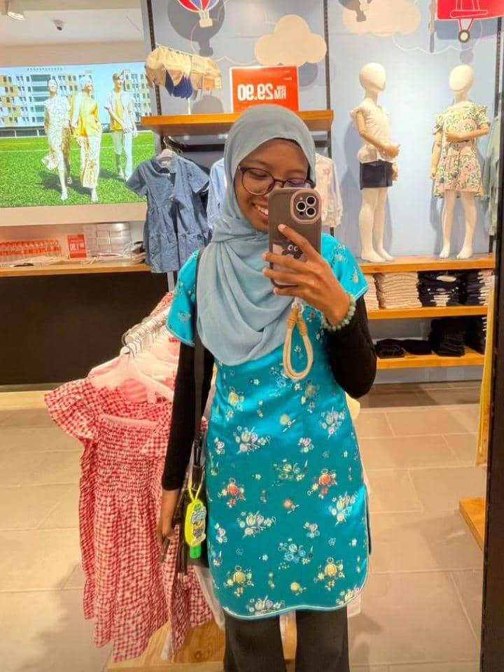

Malaysian Cultural Arts
Malaysian Cultural Arts
FEATURE ARTIST

June 21, 2025
Highlighting Nasuha
Nasuha is a rising digital artist whose work explores identity, emotion, and modern Malay aesthetics through the lens of technology. Unlike traditional media, her canvas lives in pixels—blending illustration, animation, and visual storytelling in captivating ways. Her digital brushstrokes are bold yet delicate, often shaped by themes of self-discovery, heritage, and femininity.
Through works like “Puteri Ombak” and “Virtual Batik,” Nasuha reimagines traditional motifs in modern palettes, layering symbolism with soft gradients and flowing lines. Her art feels like a dreamspace where culture meets code—personal, poetic, and ever-evolving. As part of a new wave of Malaysian creators, she embraces social platforms and online galleries as her stage, proving that even in a digital world, sincerity and cultural roots still matter. Nasuha’s voice is calm but resonant—one that speaks to young creatives finding belonging in both heritage and the future.


"My screen is my canvas—where emotion, heritage, and pixels meet." — Nasuha
As a fresh voice in Malaysia’s digital art scene, Nasuha redefines how tradition can evolve through technology. Her journey proves that storytelling doesn’t need to be bound to paper—it just needs intention, creativity, and heart.
Nasuha